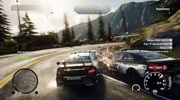

Need for Speed (Necesidad de Velocidad en español), también conocido por sus iniciales NFS, es una franquicia de videojuegos de carreras creada por Electronic Arts y actualmente desarrollada por Ghost Games. La serie se centra en las carreras
callejeras ilícitas y, en general, les da el papel a los jugadores de completar varios tipos de carreras, infringiendo en más de una ocasión la ley local en persecuciones policiales. La serie lanzó su primer título, The Need for Speed en 1994. El
título proviene de una famosa cita de la película de 1986 Top Gun. Desde Need for Speed: High Stakes, la serie también ha integrado la personalización de los vehículos en el juego.
Need for Speed (PC)
$ 250
Desripción
Casi todos los juegos de la serie NFS emplean las mismas reglas fundamentales y mecánicas similares: el jugador controla un coche de carreras en una variedad de carreras, con el objetivo de ganar la carrera. En el modo torneo/carrera, el jugador debe
ganar una serie de carreras para desbloquear vehículos y pistas. Antes de cada carrera, el jugador elige un vehículo, y tiene la opción de seleccionar si la transmisión es automática o manual. Todos los juegos de la serie tienen alguna forma de modo
multijugador que permite a los jugadores competir entre sí a través de una pantalla dividida, una red LAN o Internet.. Aunque los juegos comparten el mismo nombre, su tono y enfoque pueden variar significativamente